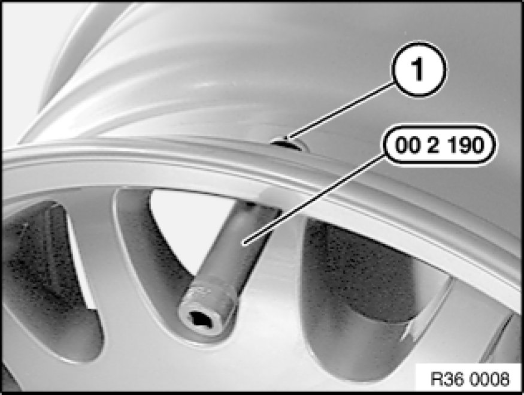
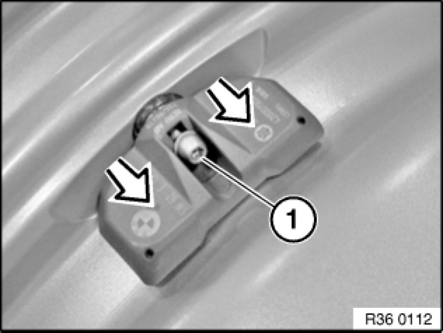

Removing and Installing/Replacing RDC Wheel Electronics
36 11 533 - Removing and installing / replacing RDC wheel electronics

Special tools required:
- 00 2 190

Important!
If the wheel electronics have been removed, the complete valve must be replaced.
Note:
If a tire sealant has been used, replace the wheel electronics.
When a tire has been removed, do not clean the rim with installed wheel electronics with high-pressure cleaning equipment.
Do not treat wheel electronics with solvents, cleaning agents etc. If dirty, wipe with a clean cloth only.
Do not clean wheel electronics with compressed air.

Necessary preliminary tasks:
- Remove tire
Labelling of wheel electronics
1 - Transmitting frequency of wheel electronics
2 - Large Torx socket
3 - BMW part number
4 - Tightening torque of Torx screw and union nut
5 - Width across flats of union nut
6 - Serial number of wheel electronics
7 - Date of manufacture of wheel electronics
Removing wheel electronics
Release Torx socket screw (1) and remove wheel electronics (2).

Release union nut with special tool 00 2 190; if necessary, grip valve insert (1) at cylindrical section of ball head.
Remove valve insert from rim.
Remove washer (1).
Installing wheel electronics
Insert new Torx socket screw (1) in wheel electronics (2) and secure firmly.
Twist new valve insert (3) by hand approx. 3 turns onto screw (1).
Note:
Do not tighten screw; wheel electronics and valve insert must be loosely joined together.
Insert valve insert with wheel electronics into cleaned valve bore.
Here the radial bore (1) for gripping on the circumference of the valve insert ball head must point outwards.
Insert the brace (1) supplied with the valve into the valve insert bore.
Fit new washer and screw on new union nut (2) by hand as far as it will go.
Important!
The screw connection must be tightened to the specified torque in one go!
Do not under any circumstances retighten the screw connection!
Remove brace, otherwise it may damage the tire.
Tighten down union nut (2) while using brace (1) to prevent valve insert from turning.
Installation Note:
Tightening torque 36 11 1AZ.

Important!
The screw connection must be tightened to the specified torque in one go!
Do not under any circumstances retighten the screw connection!
Press wheel electronics gently into well base and tighten Torx socket screw (1).
Installation Note:
Tightening torque 36 11 2AZ.